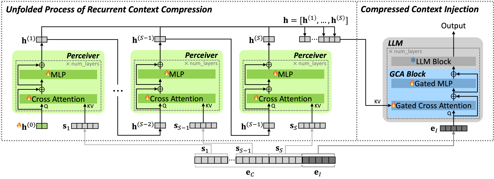
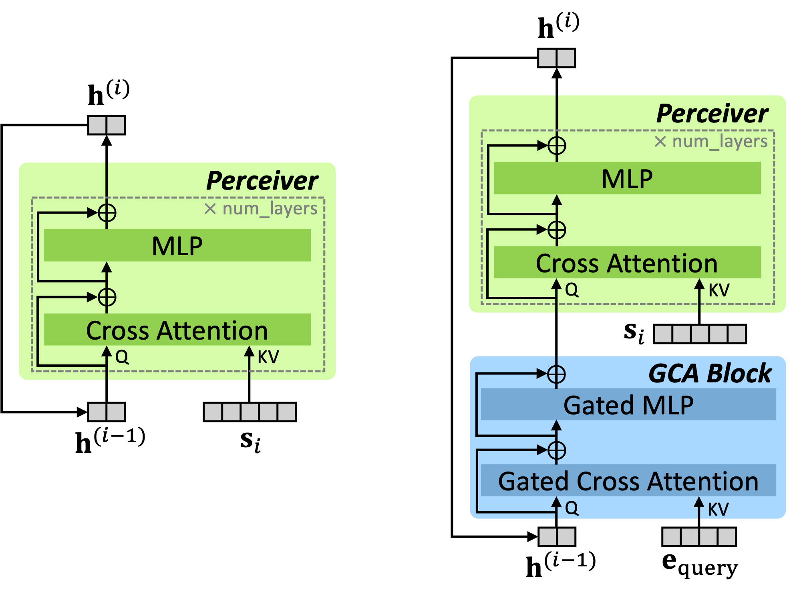

While large language models (LLMs) excel in generating coherent and contextually rich outputs, their capacity to efficiently handle long-form contexts is limited by fixed-length position embeddings. Additionally, the computational cost of processing long sequences increases quadratically, making it challenging to extend context length.
To address these challenges, we propose Long-form Context Injection with Recurrent Compression (LCIRC), a method that enables the efficient processing long-form sequences beyond the model's length limit through recurrent compression without retraining the entire model.
We further introduce query dependent context modeling, which selectively compresses query-relevant information, ensuring that the model retains the most pertinent content. Our empirical results demonstrate that Query Dependent LCIRC (QD-LCIRC) significantly improves LLM's ability to manage extended contexts, making it well-suited for tasks that require both comprehensive context understanding and query relevance.

We can also animate the scene by interpolating the deformation latent codes of two input frames. Use the slider here to linearly interpolate between the left frame and the right frame.

QDLCIRCsadfasdfasdfasdfsa
@article{an2025lcirc,
title={LCIRC: A Recurrent Compression Approach for Efficient Long-form Context and Query Dependent Modeling in LLMs},
author={An, Sumin and Sung, Junyoung and Park, Wonpyo and Park, Chanjun and Seo, Paul Hongsuck},
journal={arXiv preprint arXiv:2502.06139},
year={2025}
}